AMREL PPS-2322 power supply
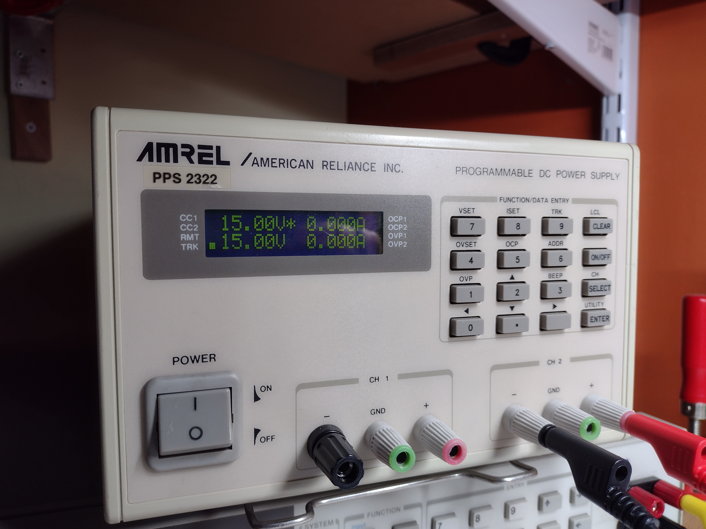
Attempts to reverse engineer a digital bench power supply and improve its performance.
The 2322 is a dual channel, 30V 2A programmable supply.
I really do like this sort of multi-channel remote control programmable linear power supply, they're not easy to find so it's worth hanging on to them. They're also really expensive most of the time.
This one came with a few inexcusable issues, in my opinion.
Some of the behaviour was so strange I thought it was faulty, and I felt compelled to
reverse engineer the circuit to see if I could do something about it.
Spoiler: I'm pretty sure now that it was just designed that way.
The issues
Issue 1. Power-on step response
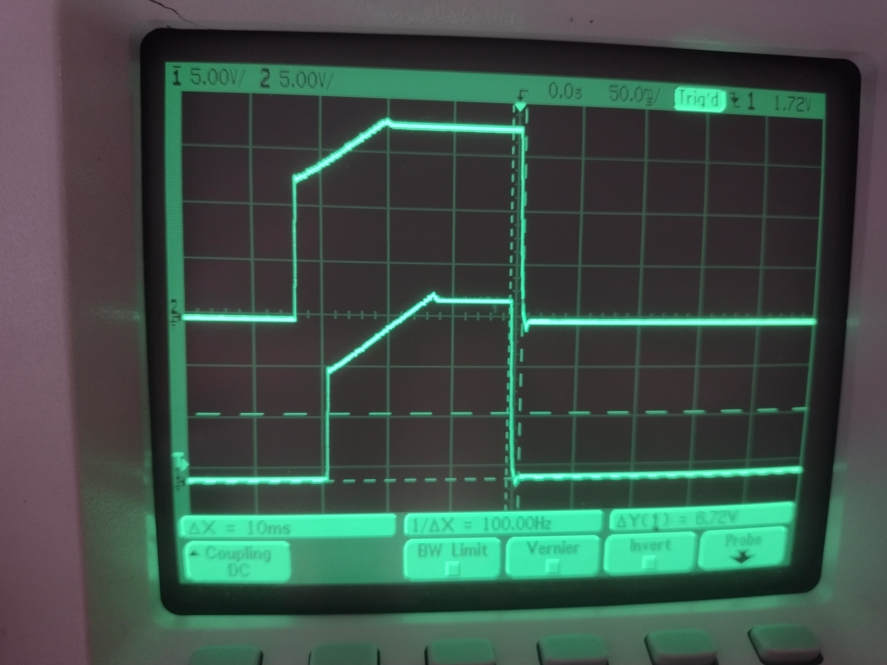
Two distinct problems are shown in this power on/off curve.
The former problem is not really major, and any power supply with current limiting will do this if the current is set low enough, and the inrush current \(i_C\) into the output capacitors is enough to trip the current limiter.
$$ i_C = C\frac{dV}{dt}$$ What's strange about this unit is that the power-on behaviour does not depend on the set current limit. No matter the set current, the output capacitor will trip the current limit on startup at higher set voltages (as though the real current limit only kicks in after a delay... more on that later).
The latter problem is pretty serious. That is about 0.3V on the rising edge and -0.7V on the falling edge. I think something like this won't destroy anything. Still, I hate it. I don't consider that negligible overshoot.
Issue 2. "Multi-step" output
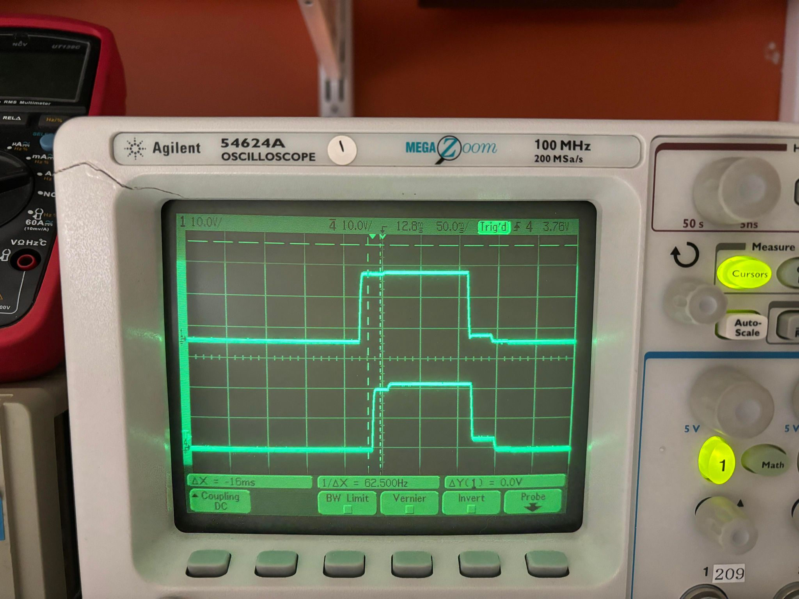
When the supply does not switch into CC mode during power-on - i.e. when
it is allowed to turn on "normally" in CV mode - it looks like it takes several intermediate steps before settling at the programmed setpoint. This is also minor, but also quite ugly.
The setpoint in that picture is pretty high, but this was done with some of the output capacitance removed so the inrush current was much lower and the limiter wouldn't trip
Issue 3. Slow CC response

Here's the voltage over a 47 ohm resistor with the output set to 8V and 10mA. The voltage rises to 8V before the current limit kicks in,
in other words a peak 170mA is drawn. It takes around 20ms for the controller to bring the current back down.
Though a bench supply is not the best option for a precision low current source (especially not this one, the CC mode noise is
only specified as 1mArms), I would improve this if possible.
Reverse engineering and modifications
I could not find any schematics for this unit, though I could find a service manual with schematics for an AMREL LPS-305 which happens to have a similar output stage and control loop and provided a good starting point to try reverse engineering.

The main functional components of the unit are the mainboard, the power supply board, and the digital card.
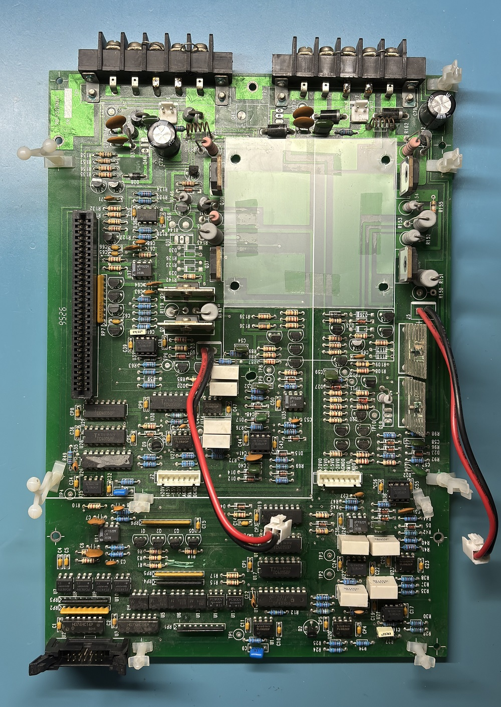
The interesting parts are here, on the mainboard. The digital card connects to the 8-bit ISA connector (Channel 1 signals) and the IDC connector in the bottom left (Channel 2 signals).
The digital card uses an 8051 at its core, or more specifically a 80C31 clone. It might be worthwhile to make a replacement with a modern microcontroller.
The communication between the card and each channel is done through photocouplers, and each channel is completely separate on the mainboard.
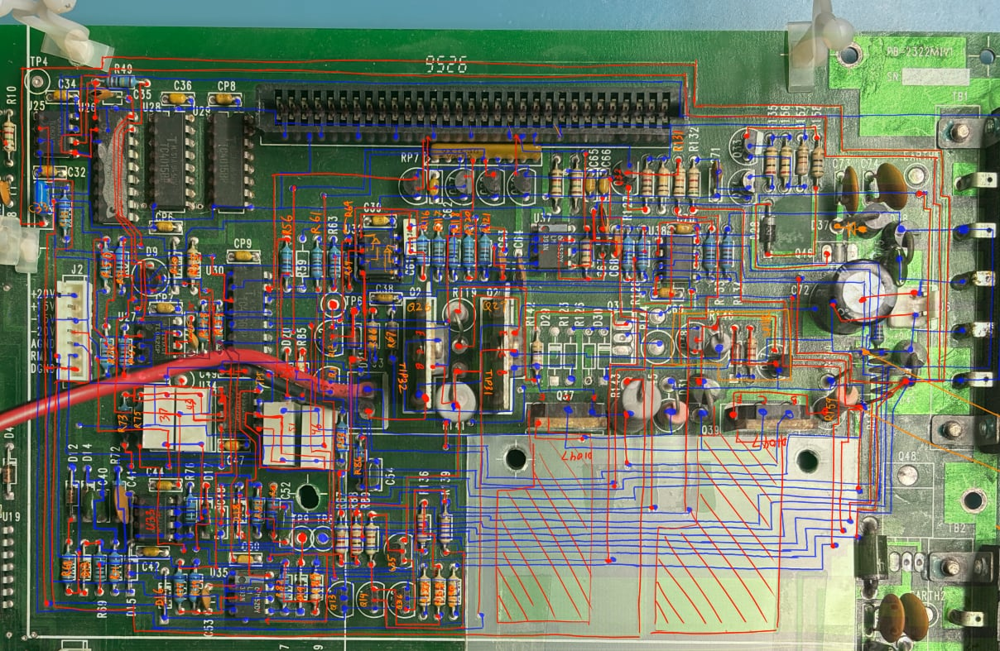
Here I draw all the visible traces (front copper in red, back copper in blue) over a picture of the board to make it a little easier to see the connections at a glance.
For now, I've only reverse engineered Channel 1, though Channel 2 should be more of the same.
DAC sample and hold
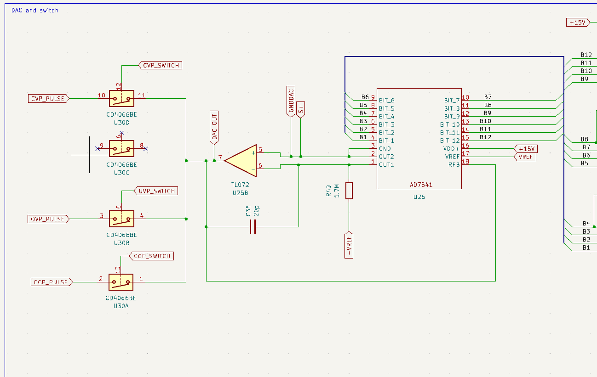
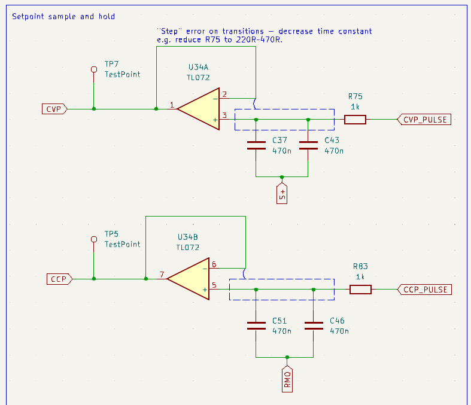
The reference voltages for the controllers are generated by an AD7541 12-bit DAC and 4066 CMOS switch in a sample-and-hold configuration. The signal is held by 2x470nF capacitors with a 1k in series, then buffered.
The DAC is also used to generate voltages for a software SAR ADC used to read back the voltage and current.
It is here where the power-on CC/CV and multi-step issues occur.
Output stage
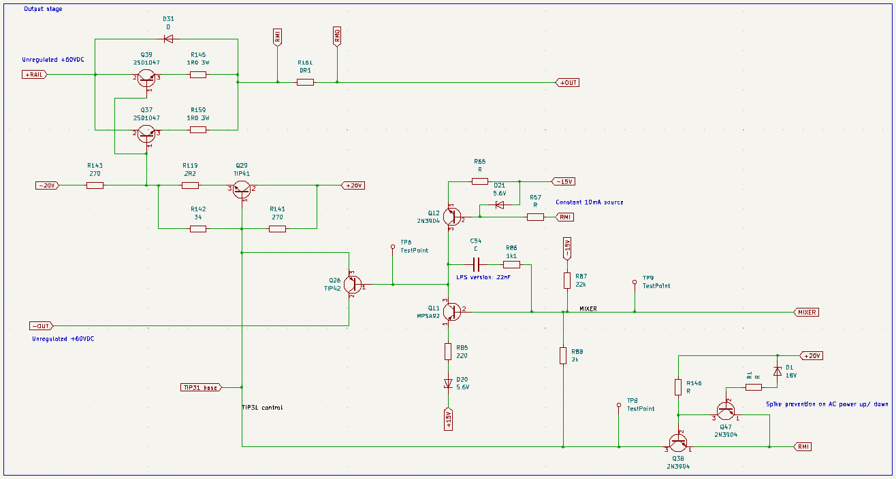
A "floating regulator" type output stage. The unregulated input 60VDC has no shared ground with the rest of the circuit. Circuit ground is at the
emitter of the series pass transistors (RMI = GND), while signal ground is at the output positive rail (+OUT = SGND). This circuit is nearly identical to that of the LPS-305 negative rail.
Measurement
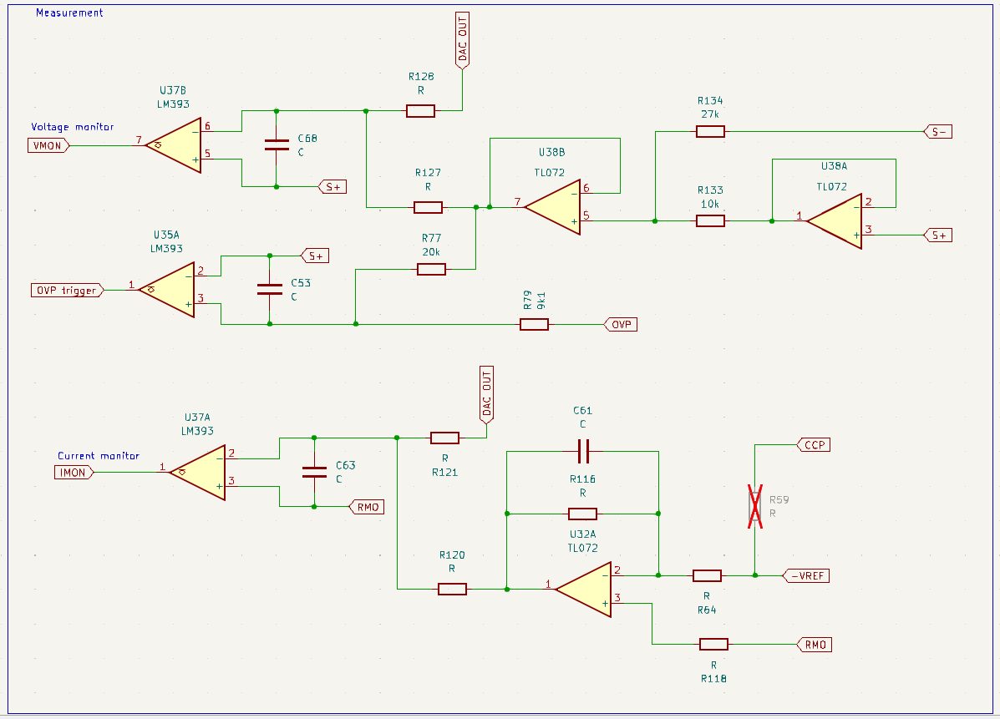
Readback is done using a software SAR ADC running on the microcontroller.
The DAC output is periodically used to generate reference voltages for the measurement comparators.
Also shown is U35A, which handles the overvoltage protection. OVP is a fast analog cutoff, while OCP is handled in software and is much slower to respond.
Controllers
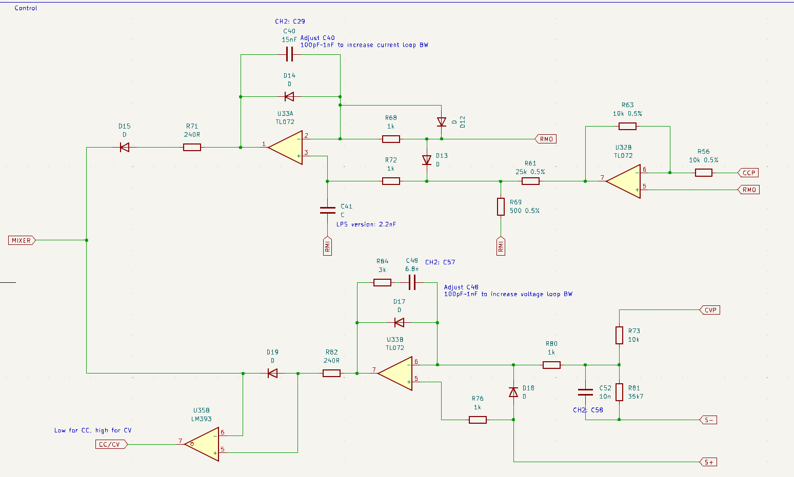
A typical diode-OR CV/CC control sharing scheme. The top branch is a pure integrator which handles current control. The bottom branch
is a filtered PID controller for voltage control.

The output sense nodes:
Current controller
The output current through \(R_{s}\) is sensed by measuring voltage at RMO, where $$-V_{RMO} = I_{out}R_S = I_{out}/10.$$

The current control is done by U33A, which compares current programming signal CCP to RMO. U32B converts CCP from signal ground reference to circuit ground reference, and inverts it.
R61 and R69 attenuate CCP by 50, and with a maximum DAC output voltage of 10V, the maximum programmable CCP signal is 200mV and the maximum programmable current is 2A.
Ultimately, the controller setpoint can be expressed as
$$V_{Iset} = R_sI_{set} \text{ ,where } I_{set} = -CCP/5$$
The error signal is then
$$e = V_{RMO}-V_{Iset} = R_s(-I_{out}-I_{set})$$
U33A is used as a pure integrator with R1 (R68 in the schematic) and C1 (C40). Anti-windup diodes D14, D13, D12 prevent the error accumulation from getting out of hand.
The transfer function of the current controller can be written as
$$\frac{V_{i}}{e}(s) = \frac{-1}{sR_1 C_1}, $$
and the controller crossover frequency is given by $$f_{i} = \frac{1}{2\pi R_1 C_1} = 10.61\mathrm{kHz} .$$

LTspice frequency sweeps. Top to bottom: 1. open loop gain \(C(s)P(s) = I_{out}/e \) , 2. plant gain \(P(s)=I_{out}/V_{i}\) , 3. controller gain \(C(s)=V_{i}/e\)
The open loop system crossover frequency for the CC mode is at 6.2kHz and the phase margin is around 75 degrees.
The CC controller isn't very good, and part of the reason it is slow may be because it is missing a proportional action. It's also quite bad at rejecting power supply ripple.
I suppose the reason for using a pure I-controller here is so that it has a very subdued response and the CV loop can dominate. Usually, CV mode is the normal
operating condition for a lab power supply, so it's reasonable that voltage control gets priority over current control.
Still, it may be good to push the CC loop crossover frequency up to try to suppress the current overshoot a bit. Ultimately, maybe the CC mode needs a better controller design altogether.
Voltage controller

The voltage controller at U33B is sort of shaped like a Type-3 compensator, and is in effect a filtered derivative PID controller.
The controller's setpoint is fixed at signal ground, i.e.:
$$V_{Vset} = V_{S+}.$$
The "actual" setpoint which controls the output voltage is the CVP signal, fed in at a summing junction at the inverting input of U33B. Thus, we have error signal given by
$$e=3.57CVP + V_{S-} - V_{V_Vset}$$
For this AC analysis of the controller, we can choose arbritrary DC values \(V_{S+}=CVP=0\mathrm{V}\), so that
$$e=V_{S-}$$
U33B has a local feedback network formed by R1 (R84), C1 (C48), R2 (R80), Rd (R81), Cd (C52). R73 does not affect the controller frequency response.
The transfer function for the voltage controller can be written as
$$\frac{V_{v}}{e}(s) = -\frac{R_1}{R_2+R_d}\frac{(\omega_{z1}/s + 1)(s/\omega_{z2} + 1)}{(1 + 1/\omega_{p}s)},$$
where the pole and zero frequencies can be found as:
$$\omega_{z1} = \frac{1}{C_1R_1} \rightarrow f_{z1} = 7.8\mathrm{kHz},$$
$$\omega_{z2} = \frac{1}{C_dR_d} \rightarrow f_{z2} = 445\mathrm{kHz},$$
$$\omega_{p} = \frac{1}{C_d (R_2//R_d)} \rightarrow f_{p} = 16\mathrm{kHz}.$$

LTspice frequency sweeps. Top to bottom: 1. open loop gain \(C(s)P(s) = V_{out}/e\) , 2. plant gain \(P(s)=V_{out}/V_{v}\) , 3. \(C(s)=V_{v}/e\)
With the output set to 30V and a 10k load, the phase margin is around 74 degrees, and the system crossover frequency is 4.6kHz.
Possible fixes: power-on issues
Multistep waveforms and sequencing problem

Here we see the current programming and voltage programming waveforms at the output of the 4066. The two waveforms above show the CVP_PULSE signal and the CVP_SWITCH signal,
and the other pair are the CCP_PULSE and CCP_SWITCH signals. From this it's clear that the time constant of the RC network in the sample and hold is too long
for the programming pulse duration, and it takes a couple cycles to get to the programmed level, on both rise and fall. This is what causes the "multistep" power-on/off waveform.

In SPICE, we can confirm this is expected behaviour based on the selected R, C and programming pulse duration.
Unless I'm missing something, this just looks like a design error.
A more subtle issue we can see here is the sequencing of the CVP and CCP signals. Notice that the CVP signal is always enabled before the CCP signal, which causes the current
limit to kick in on every startup regardless of the programmed current.

Waveforms, top to bottom: 1. DAC output, 2. CCP_SWITCH, 3. CVP_SWITCH, 4. Output
- At idle, both CVP and CCP are set for 0V and 0A.
- When the output enable is switched on, the CVP level is programmed first, the output voltage begins to rise and current begins to flow through shunt resistor R161 to charge the output capacitor. The supply mode is CV.
- At this stage CCP is still set for 0A. It will still allow a small current to flow, due to some combination of calibration error and input offset voltage. The current loop responds to the inrush current, but because it is still set for 0A, it instantly goes into current limit. The supply mode is now CC
- The CCP level is usually programmed one cycle after the CVP level. This releases the current limit and the supply returns to CV mode, where we can see the CC-CV mode overshoot.
Multi-step fix
The "multi-step" waveform is an easy fix, we just need the minimum CVP_SWITCH or CCP_SWITCH pulse duration to be much larger than the RC time constant, ~5x is usually considered enough. The programming pulse lengths are not consistent, but the shortest ones are around 2ms. $$t_{switch} > 5R_{total}C$$ $$R_{total}C < t_{switch,min}/5 \rightarrow R_{total}C < 0.4\mathrm{ms} $$ With the default parameters \(R=1\mathrm{k}, C=940\mathrm{nF}\), and assuming a maximum switch resistance of 160\(\Omega\), $$R_{total}C = (1.160\mathrm{k})(940\mathrm{nF}) = 1.1\mathrm{ms}.$$ My recommendation is to replace the 1k with a smaller R=220, which gives $$R_{total}C = (380)(940\mathrm{nF}) = 0.36\mathrm{ms}.$$CV/CC programming sequence fix
As for the sequencing issue, it's a relatively minor problem. More of an annoyance than anything. It's also quite a difficult one to fix, as it's entirely a firmware issue.
The original ROM chip is a 27C512 UVEPROM, and I replaced it with a W27C512 EEPROM.
You could dive into the 8051 assembly to reverse the order in the original firmware, which is doable but until I do a full reverse engineering of the firmware, I don't trust that so much.
Very fortunately, you can find new firmware for a rebranded, later version of this unit:
the Motech 1204.
Though the boards in that one look completely different, and it uses a different ROM chip, it seems like the fundamental design is the same. This new firmware switches the CV and CC programming sequence.
There are a few caveats, of course.
If the new firmware is loaded, the supply's calibration will be invalidated because the EEPROM addressing is not consistent between versions, and the internal calibration calculations are done differently.
More importantly, the OVP setpoint is no longer accurate. The new firmware expects a smaller ratio on the sense divider, and as a result the actual voltage limit is about 40% higher than the programmed limit.
That might still be usable, because it's a consistent behaviour. The fix for this, if desired, is simple - replacing R79 and R45 (9k1) with 13.3k should restore normal OVP function. That would probably
be considerably less effort than reverse engineering the new firmware and changing the ratio in software. Alternatively, replacing R77 and R47 (20k) with a 13.5k is also acceptable.
I also suspect the GPIB functionality may be broken with the new firmware, but I haven't checked this since I don't have any GPIB controllers.
Possible fixes: loop compensation
Voltage loop

Now we get to the interesting part, dealing with the overshoot. Taking the reverse engineered circuit into LTspice, it seems that the overshoot at the CC/CV transition and the falling edge are both expected.
It is entirely possible something has gone faulty in both the real unit and in my simulation, but I figure the odds of that are low.

Looking at the negative overshoot, for example, the simulated overshoot is remarkably close to what we can measure on the unit.
The easiest modification which all but eliminates the overshoots in either direction is reducing the value of C48 from 6n8 to the ~100pF range. This fundamentally changes the controller behaviour,
and essentially removes the derivative action.
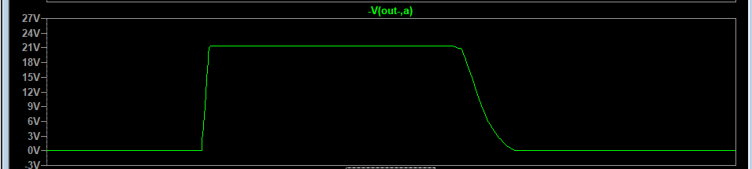
With C48 = 100pF, there is zero negative overshoot. There remains a very minor overshoot at the CC/CV transition, but it is below 50mV and very hard to notice.
The CC-CV transition is kind of an "extreme" situation, so this is probably acceptable. More acceptable than several hundred mV, at least.

Using C48 = 100pF pushes the crossover frequency of the controller up to 350kHz and costs some phase margin, which drops by around 10 degrees compared to the stock configuration with the same loading condition.
The phase margin is around 64 degrees in this case.
Using C48 = 200pF results in a larger overshoot (100mV CC-CV overshoot and -20mV negative overshoot), but it yields a very good >80 degrees phase margin due to better compensation of the plant characteristics.
Anything between 100pF - 1nF for C48 results in markedly better performance than stock due to higher bandwidth while maintaining positive phase and gain margin.
Phase and gain margin are not bulletproof stability tests, however, and it is usually useful to also look at the output impedance of the power supply. As the bandwidth increases, the interaction between the effective
supply output inductance and the output capacitors form an LC resonator which limits the stability. Specifically, the phase of the output impedance approaches or exceeds 90 degrees. So it appears
there may have been a deliberate tradeoff between transient response and the output impedance behaviour, where absolute stability was achieved at the expense of overshoot.
I would prefer the opposite for a general purpose lab supply.
As long as the supply does not oscillate, some ringing with difficult inductive loads is reasonable. Nearly a volt of overshoot on power-on and off is not.
Of course, going deeper into the loop shaping is also an option here, but replacing C48 alone seems good enough to solve most issues with a minimum modification. Something like C48 = 320p maintains
positive phase and gain margins, does not let the output impedance phase exceed 90 degrees, and fixes the transient response.
Though the output impedance still indicates stability, it has much smaller margins than the stock configuration.
I suspect this will cause some worse ringing with certain difficult loads, but that is preferable to the large overshoot on startup.
In real tests, it also happens to reduce the output voltage noise quite substantially, possibly due to better PSRR with higher bandwidth.
Current loop

Like with the real test, here we set up the LTspice model to deliver ~8V/10mA into a 47R load.
The simulation seems to show the slow CC regulation is expected.
In the current controller, changing C40 from 15nF to 1nF is enough to suppress the overshoot to below 20mA with any set voltage.

Again, the load is a 47R resistor, and the current limit is set to 10mA.
Increasing the set voltage to the theoretical maximum 35V results in just under 13mA peak current, and this is probably acceptable current limiting performance.

However, looking at the frequency response, the phase margin of the CC system is now around 47 degrees and the crossover frequency is 45kHz.
This is getting a bit too close to potential instability for my taste.
We also typically want the gain crossover slope to be -20dB/decade for stability.
If we want to keep the output stage unchanged, that seems to be with a crossover frequency around 5kHz, which means we don't really have room to increase this bandwidth from the stock configuration and maintain good stability.
To increase the current controller bandwidth and kill the overshoot, it would really be better to introduce a lead compensator - i.e., make the CC controller a proper PID controller.
The Agilent 6632B has a slow CC response time too, much worse than this, so I am used to it. It could be argued that this allows for proper operation with DUTs that have
large startup currents - the initial spike is allowed, but if sustained excess current is drawn then it gets clamped.
We'll leave it for now. -____-
Detour: output noise
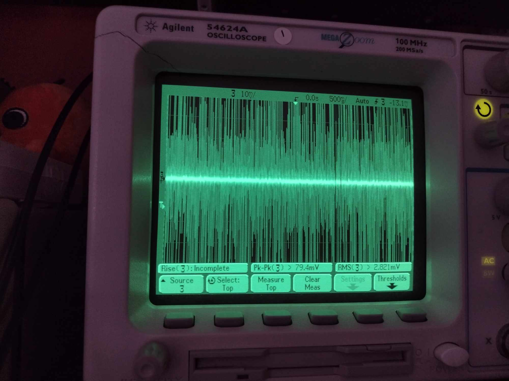
After putting everything back together, this was the output noise at the front output terminals. >100mV peak to peak.
I can't remember if I ever measured the output noise with the case closed before...

At any rate, this was somehow related to the common mode filtering caps C73 and C74.

Removing them completely fixed the noise. These shouldn't be critical components, just additional filtering.
The chassis ground is intact, and the ground terminals are all still usable. I still cannot really explain what the problem was, though...
Results
(Modifications to Channel 1)
| Part | Original value | New value |
|---|---|---|
| ROM version | 5.23 | 8.07 |
| C48 | 6.8nF | 320pF |
| R75,R83 | 1k | 220R |
| R77 | 20k | 13.5k |

With a set 12V and 1A, the power-on is a clean step. No overshoot on the power-off. It looks like the output caps quickly drain through the shunt resistor on output disable.

With a set 12V and 0.050A, the output caps trigger the current limit during the startup. That is pretty much unavoidable unless the output capacitance is decreased, but that has a negative effect on both output noise and loop stability. But this time, very little overshoot on the mode crossover. Much better.
A quick summary of the characteristics of the (modified) unit, as I see it:
| Pros | Cons |
|---|---|
|
(typically around 10mVpp and 1mApp) |
It's good to disconnect the leads before switching power off. You can remove some but the output noise significantly suffers. |
At some point I test the real stability with different loads, transient response time, etc. But we'll leave it at that for now.